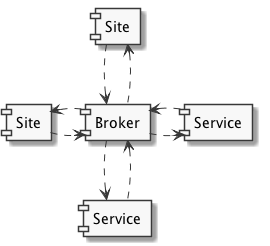

AMQP consumer and producer integration for Zope2 (e.g. Plone)

collective.zamqp acts as a Zope Server by co-opting Zope’s asyncore mainloop (using asyncore-supporting AMQP-library pika), and injecting consumed messages as requests to be handled by ZPublisher (exactly like Zope ClockServer).
Therefore AMQP-messages are handled (by default) in a similar environment to regular HTTP-requests: ZCA-hooks, events and everything else behaving normally.
This package is an almost complete rewrite of affinitic.zamqp, but preserves its ideas on how to setup AMQP-messaging by configuring only producers and consumers.
While we are still documenting and testing collective.zamqp, you may want to take a look at at collective.zamqpdemo for an example of use.